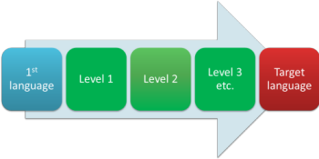
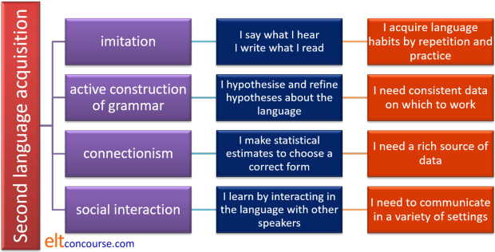

Theories of second-language acquisition (SLA)

This is an overview. There are references at the end to further reading.
 |
Culture |
People have been learning and acquiring second (or third, fourth
etc.) languages for thousands of years. There's nothing new in
that.
In many parts of the world, the ability to speak multiple languages
is the norm not the exception.
In India, for example, Hindi, English, Bengali, Gujarati, Kashmiri,
Malayalam, Marathi, Oriya, Punjabi, Tamil, Telugu, Urdu, Kannada,
Assamese, Sanskrit and Sindhi are all official languages and it is
not uncommon to find people proficient in more than two of them.
In South Africa, IsiZulu, IsiXhosa, Afrikaans, Sepedi, English,
Setswana, Sesotho and Xitsonga are widely spoken and even in the USA
(a country often assumed to be more or less monoglot) over 400
languages are spoken, some very widely, 170-odd of which are
indigenous to the area. A fifth of the US population uses a
language other than English in the home. In California, you
can take your driving test in any of 32 languages.
Within Europe, a number of countries have more than one official
language. Switzerland is an obvious example but there are also four
official languages in Austria, Germany and Spain, two in The
Netherlands, two in Finland and so on. 100 languages are spoken across
the UK and one in five of London's population does not have English
as a first language. The UK, oddly, does not even have an
official language although 98% of the population speak English.
We should not, therefore, see the acquisition of an additional
language as in any way exceptional.
Four important concepts |
What is newer is the study of how second languages are learned or acquired. To understand the underlying theories, it is useful to have a set of thinking tools to hand and that means understanding four elemental concepts.
- Competence vs. Performance
- Ferdinand de Saussure, in his Course in General Linguistics
(1915) distinguished between langue (roughly the internal rules
and arrangements of a language) and parole (roughly the spoken
and written forms of language seen in everyday settings).
Chomsky, much later (1965 / 2002), made a similar distinction between Competence and Performance.
Competence is the speaker's general, implicit and rarely articulated, knowledge of the grammar of a language and Performance is the speaker's actual use of the language in speaking and understanding it.
Chomsky was not concerned so much with what is actually said but with what can be said.
The difference between the two divisions is that de Saussure was concerned with language in society but Chomsky was more concerned to explain individuals' use of and knowledge about the form of language.
For more on Chomsky's theories see the guide to Chomsky, linked in the list of related guides at the end. - Use vs. Usage
- This distinction was first proposed by Widdowson (1978) and
refers to the difference between the formal structures of the
language and the language as it is used in real communication
for authentic purposes.
Briefly, the distinction rests on the difference between signification (what, on the face of it, an utterance means) and value (what it means in communication). So for example, if someone says
I have a terrible headache
and the reply is:
It's nearly 6 o'clock in New York
while we know what the words mean (the significance), they carry no communicative value.
If, on the other hand, the reply is:
I'll get you something for it
then the response carries both significance and communicative value.
Much research into second-language acquisition is concerned with usage (how people acquire the formal systems of the language) and less effort has been devoted to how learners acquire the ability to use the language to get things done.
English language teachers are concerned with both significance and value, of course. - Acquisition vs. Learning
- This distinction is attributed to Krashen (to whom there is
a separate
guide on this site, linked below).
Acquisition is a process similar to the way in which children acquire their first language(s). It requires meaningful and frequent interaction in the language in which the speakers are not focused on form but on meaning.
Learning is, in contrast, a formal procedure which focuses on the explanation of rules and correction of language form.
It should be noted that Krashen was not explicitly stating that one is necessarily better than the other.
The distinction can be extended to the difference between naturalistic acquisition and instructed acquisition. The former refers to the almost unconscious picking up of a language and the latter to the deliberate choice to study and be formally taught. - Deductive vs. Inductive processing
- Deductive processing involves the application of given rules
to the data.
For example, once you have been made aware that putting the right ending on a German verb in the second person singular (familiar) is to substitute -st for -en then you can transform any number of infinitive forms in the correct way to get, e.g.,
rauchen – rauchst
bringen – bringst
and so on.
Inductive processing works the other way around.
Given the examples of the transformation above and some more examples, such as
reisen – reist
denken – denkst
etc.
You can figure out for yourself what the rule is.
(You will not, by the way, be right for all the verbs in the language and this won't help you much with meaning but you will, one way or another, have learned a useful rule.)
Much nonsense is spoken about taking either an inductive or a deductive approach to learning. This is not an either-or distinction. Even if one starts with a purely inductive approach in the classroom, the aim has to be for the learners to hypothesise a rule (preferably the right one) and then apply it to further examples of the target language. The second procedure is, of course, purely deductive. There is little point in putting learners to the trouble of constructing a rule from exemplification if they are not then encouraged to apply it.
On the other hand, starting with a deductive approach and supplying a rule from the outset nearly always results in the need to refine the rule later to take account of more complex forms. Even if we knew what they are, it would not be possible to supply all the rules for using, say, verb tenses in English so any rule which is presented to learners has to be no more than an approximation.
The situation is a bit like this:

and nobody yet knows the TRUTH, however sure of themselves they sound.
 |
Internal factors |
At the heart of all theories of SLA lie considerations of what the learner brings to the process and what role external factor play in it.
The starting point is the distinction between learning as a cognitive, conscious mental process and learning as a process of acquiring good habits.
Behaviourism |
It is well attested that one can teach rats (and all sorts of
other creatures) by a process of stimulus and reward. Rats,
famously, can be taught complex sequences of behaviour such as
finding their way through a maze based purely on rewarding, i.e.,
positively reinforcing, certain behaviours and punishing, i.e.,
negatively reinforcing, unwanted behaviour.
The theory relies heavily on work by, inter alia, Skinner
(1957: 10) who is often quoted as saying:
We have no reason to assume
... that verbal behaviour differs in any fundamental respect
from non-verbal behaviour, or that any new principles must
be invoked to account for it.
(Skinner
1957: 10)
Behaviourism is the theory of learning that still underlies how you train your dog or drill your learners' pronunciation. It can be visualised like this:

Briefly, and somewhat unscientifically:
- The process starts with a stimulus, say, a question from the
teacher such as
Where did you go yesterday?
put to the organism (in this case, a learner of English). The stimulus can elicit a variety of responses but only the 'right' one will be reinforced. - So, for example, if the organism responds with
I go to the cinema
the teacher will negatively reinforce it with
No, that's wrong
or simply not reinforce it by saying nothing. - If, on the other hand, the organism produces the preferred
response:
I went to the cinema
the teacher will reinforce it with
Yes, that's right!
(preferably in a loud and enthusiastic voice because the strength of the reinforcement is critical in instilling the correct habit). In this case, the reward is the teacher's approval but it could just as well be a chocolate biscuit. The response does not have to be truthful, just well formed. - Enough Stimulus > Response > Reinforcement cycles will see the habit instilled and the language acquired.
These are factors internal to the learner but they have significant implications for external factors such as the approach to teaching. It underlies drilling language in the classroom, setting mechanical (and not so mechanical) exercises, exposing learners to patterns of language, repetition of language, the avoidance of error and much else.
 |
Cognitivism |
Much research in the 1970s and later was focused on a determination to refute a behaviourist view of language learning and acquisition. Three main lines of attack emerged.
- Language use is unpredictable.
Although it may be the case that turning left and right in a maze in a complex sequence of turns will inevitably lead to a reward, the same cannot be said of language.
Even a response to something as straightforward as
Good afternoon!
could be a similar greeting or it could be a sheepish acknowledgement that one is very late for a morning lesson. - Reinforcement is unreliable and variable.
The people we speak to may respond more positively to the interesting content of an ill-formed sentence than to irrelevant or dull data presented in well-formed language. - Innovation. Learners, even at early stages, are capable of producing utterances that they have never heard before. If language is a habit structure, acquired by repetition and drilling, they should not be able to do that.
The triumph of a more cognitivist view of language learning led to a number of competing hypotheses concerning how SLA occurs. The initial attempt was to focus on internal factors but they all have significant external implications to do with presumptions concerning how language learning should take place to which we shall come.
In addition to these basic distinctions, it is now necessary to add several other theories and ideas. Most of these concern theories of first language acquisition and are dealt with in a little more detail in the guide to first- and second-language acquisition, linked below.
Error analysis |
The analysis of learners' errors starts with seminal work by Pit
Corder (1981) who set out to investigate how the errors that learners make
reflect their internal mental processes.
The key concept is interlanguage.
Interlanguage can be visualised like this where the learner's current knowledge lies somewhere on a continuum from knowing nothing about the target language to full mastery:

The diagram oversimplifies and hides some interesting ideas
concerning the sources of error and the current state of the
learners' knowledge.
What studies showed was that although some errors
were the result of applying first-language rules to the target
language (which would indicate the transfer of language habits),
some errors indicated that learners were
creatively constructing
rules and hypotheses to explain the data to which they were exposed.
If this is the case, then teaching needs to address the positive
role of error, the concept of noticing the difference between one's
own output and native-speaker models and the supply of adequately
rich linguistic data for the learners' cognitive processes to work
on.
For a little more, see the guide to first- and second-language
acquisition, linked below.
Acquisition order |
Claims have been made that structural elements of a language are
learned or acquired in a sequence which is remarkably stable across learners
with a wide range of language and learning backgrounds. Of
late, enthusiasm for the idea of a fixed acquisition order has
waned although there are some who still hold to
it.
The jury is still out but there is undeniably some evidence that the
phenomenon is real. What has become clear is that teaching
the target structures for which the learners are ready will be
more effective than trying to impose a syllabus to beat the system.
 |
Universal Grammar and the Language Acquisition Device |
The essentials of these two ideas are covered in the guide to Chomsky so, in brief:
- Universal Grammar refers to the idea that all languages
exhibit common features which result, some say, from the
structure of the human mind. For example, it is averred
that all languages have phrase structures in common (i.e., a
head and a complement) and that all languages share other
characteristics including major word and phrase classes.
It is, indeed, difficult to imagine a language which did not use
noun phrases, subjects, prepositional phrases (or at least some
way of connecting verbs to nouns) and so on.
Unfortunately, there is evidence that there are languages which manage to do without what are considered major word and phrase types in English and many language have word classes unknown in Indo-European languages. - The concept of a Language Acquisition Device springs from
the observation that children acquire language very efficiently
and very quickly even in circumstances in which there is quite
poor information for them to work on. The assumption
follows that the human brain is hard-wired to learn language and
that the process starts at birth or, some say, even before
birth. What this means in practice is that, before we even leave the womb, our
brains are prepared for the kinds of phrase structures and
grammatical rules we will need to process the language we hear.
Some have compared this to a kind of internal switchboard with which we can categorise input making guesses and assumptions.
The key question for language teachers is whether, after a certain age, we retain any access to the device which helped us learn our first language.
For more on these twin concepts, see the guide to Chomsky, linked below.
Active Construction of Grammar and Connectionist Theory |
Because it may be the case that both these mechanisms are functioning simultaneously, we'll consider them together.
- Active Construction of Grammar is a
cognitive theory of language acquisition which rests on the
assertion that learners of both first and second languages are
actively hypothesising what its rules are and refining their
hypotheses as more data become available. It explains, among
much else, the fact that both first and second language learners
may apply a newly-acquired rule indiscriminately and, for
example, put an -ed ending on all verbs to show past tenses
before they refine the hypothesis and link the phenomenon only
to regular verbs in English. It will also explain errors
such as
*Do you can come?
as evidence that the learner has made a hypothesis that all verbs form questions in this way in English.
Only later will the learner reconstruct the hypothesis to exclude modal auxiliary verbs from the scheme.
The phenomenon exemplified here is known as the U-shaped learning curve. - Connectionist Theory is not dissimilar but
it explains a problem that has been identified with the theory
of Active Construction of Grammar.
The problem is this:
When children are asked to make past tenses or plurals from nonsense words which resemble real but irregular forms, they do not apply the grammar rules but respond in terms of statistical likelihood.
For example (from Bergman et al (2007)), when asked to form the past tense of fring, many children will suggest frang or frought (by analogy with ring and bring etc., respectively) rather than the structurally predictable fringed.
It has been suggested that humans make neural connections in the brain based on the frequency of what they hear rather than making rules based on the structure of what they hear.
It is clear as far as teaching the language is concerned that for
either of these theoretical mechanisms to function efficiently, the
data presented to learners has to be orderly and rich enough for
them to form hypotheses effectively and adapt them appropriately as
new data become available.
For a little more in this area, see the guide
to first- and second-language acquisition, linked below in the list
of related guides.
Social constructivist theory |
It has sometimes been a criticism levelled at a communicative approaches to language teaching that while the approach has a well worked out theory of language, it is less certain about a theory of learning. Enter social constructivism to the rescue.
Briefly, the theory states that learning is constructed by the
learners. This is usually contrasted in educational theory
with what is labelled as a transmission model in which knowledge is
handed down from above.
The criticism of that is, naturally, that social constructivists are
setting up an unrealistic 'traditional' model in order to suggest
how social constructivism is superior.
It is, moreover, asserted that learning is primarily a social
activity. This means that knowledge and skills are not
acquired by individuals operating alone but only through interaction
with others.
This makes the theory a good fit with communicative classroom
approaches which forefront real communicative tasks and emphasise
interaction with peers and others.
Unfortunately, the theory is somewhat silent concerning the mechanisms through which learning takes place (unlike, e.g., connectionist and active construction theories). It may, therefore, be wise to reserve judgement or, at least, to take the view that while social interaction is undoubtedly a useful and motivating factor in second-language acquisition, it cannot be the whole truth or individual silent learning would be impossible. If you are reading this page alone, is it the case that you are unable to learn from it because you are not interacting with others?
Such considerations have not stopped some from asserting that
social constructivism is the way in which learning
happens.
Here's an example:
We believe that learning is best
conceptualised through a social constructivist theory of learning. A key tenet of this is the view that learning
is constructed by the learner, as opposed to the traditional,
“transmission” model of teaching and learning in which knowledge is
passed on to students fully formed, ready to be assimilated.
Furthermore, learning is primarily a social activity – knowledge and
skills are constructed through interaction with others.
Harrison, 2019 (Senior Education Manager,
Cambridge Assessment English)
We need, however, to maintain a certain objectivity in this regard, too. Constructivism is not a proven fact or even as yet elevated to the status of a theory. It is one of many hypotheses about how language is learned.
Summary
Here's an incomplete summary of four major hypotheses concerning second-language acquisition. It is not meant to show that learners use only one approach. Some may use all four.

External factors |
There are also a number of factors external to the learner which need to be considered, if only briefly.
Social factors |
Much of Communicative Language Teaching lays great
stress on natural and appropriate language as the target of
instruction.
It follows that in order to be able to acquire pragmatic as well as
formal competence in a language, learners need to be exposed to
appropriately complex social situations in which the target language
is set.
Similar connectionist and active construction mechanisms may also be
at work here as the learners refine their hypotheses about what
is socially appropriate to realise a particular language function
and what is statistically the most frequent way of doing so.
Also in play here are motivational issues. Gardner (1985), for
example, emphasises the role of learners' attitudes to the culture
in which the second language is set. Those who perceive it as
high status and desirable will have greater integrative motivation
and be more successful in acquiring the language whereas those who
remain isolated from the target-language culture, or even
indifferent or antagonistic to it, tend to develop
only a very basic competence.
For more, see the guide to
motivation, linked below.
Input |
The behaviourist view of input in the language learning process
was that the input had to be very carefully tailored to the
learners' current competence and, by a process of repeatedly
encountering the data and repeating language in bite-sized doses, learning
and competence would follow. This is the underlying theory
that gives rise to drilling and very controlled oral and written
language practice.
The approach has been challenged in two ways:
- One of Krashen's 5 famous hypotheses is the Input
hypothesis: for optimum effect, the input a learner receives
should be
- comprehensible and
- just above the level of the learner.
Such input allows the acquisition and learning devices (whatever they are) to operate on sufficiently comprehensible and challenging data. - Vygotsky and later writers assert the importance of
scaffolding the input to allow learners to achieve more
than they could if left to process the data independently.
(Vygotsky never used the term scaffolding; it was coined by
Bruner in the 1960s.)
Vygotsky's contribution concerns the Zone of Proximal
Development or ZPD which can be visualised like this:

To the top left, a task is over-challenging and learners will become anxious and be overwhelmed by the data.
To the bottom right, a task is under-challenging and learners will learn nothing and may become bored and uninterested.
The underlying assumption here is summarised by Waters as:
... learning occurs when the mind makes
connections between what it already knows and new, hitherto unknown
items of information
(Waters, 2006:319)
In other words, if the level of challenge is correctly set,
learning will occur by extension and connection. Stretched too
far, learners will fail to see the connections. Challenged too
little and learners will not make new connections at all.
Linked below is a guide to a key set of concepts in this regard:
Bloom's taxonomy of educational objectives which is an attempt to
categorise cognitive challenge on a six-point scale from simple
remembering to creating new syntheses.
There is a guide on this site to scaffolding, the ZPD and
Vygotsky, linked below.
Motivation is also a significant factor and there is a link to a
guide to that, in the table below.
Healthy, critical scepticism |
This guide has been a brief one and only covered the salient
features of a range of popular answers to the question
How do people
learn a language?
You will have noticed that some theories are presented as
take-it-or-leave-it choices but reality is probably a little more
complicated. Humans are complex animals with the capacity for
complex behaviour and ways of thinking about the world. To
aver that all of them learn all facets of all languages in the same
way is much more likely to be wrong than right.
It may turn out to be the case, for example, that we learn grammar
in one way, pronunciation in another and lexis in a third way and
that has, in fact been suggested. The suggestion, again
briefly, is that:
- We learn grammar by a process of actively constructing and amending hypotheses about the way the language we have encountered works.
- We learn lexis through a process of making connections from the known to the unknown and taking the trouble to see how meaning is used in the language we encounter.
- We learn to pronounce the target phonemes in a language by a process of habituating ourselves to making certain (to us) unusual sounds and imitating what we hear.
- We learn to communicate using appropriate styles and registers in a process of constructing meaning socially with other humans.
If this is the case or even part of it is true, looking for a theory which explains all learning is a doomed undertaking. Worse, it will constrain teachers' behaviours and planning to a degree which will not be helpful to the learners.
If you would like to take a simple test to check you have key concepts clear, there is one here.
Moving on |
All the above concerns some quite rarefied theory but a good theory has practical implications and advantages.
You may like now to consider some other guides on this site to more practical matters, some of which have been mentioned.
| Related guides | |
| first- and second-language acquisition | theories about how we learn our first language and how they may apply to SLA |
| Chomsky | Transformational Generative Grammar, Competence and Performance, the Language Acquisition Device and Universal Grammar |
| Krashen and the Natural Approach | the five central hypotheses, The Natural Approach in practice and criticisms of the theory |
| motivation | Gardner's four motivational categories, Expectancy Theory and Task, Institutional and Global motivation |
| error | categorising error, the role of error in learning, interlanguage |
| the history and development of English Language Teaching | the ways in which theories of language and theories of learning have developed and informed ELT methodologies |
| scaffolding | a guide which includes considerations of the ZPD and Vygotsky's theories |
| input | the nature of input and how input may become intake and output |
| noticing | how learners refine hypotheses based on what they see and hear |
| inferencing | for a little more about how we use statistical reasoning to understand language |
| Bloom's taxonomy | this takes a severely cognitive view of learning and attempts to rate cognitive challenge on a six-point scale |
| unlocking learning | this is a guide in the Delta section which considers four theories and their classroom implications for learning |
References:
Bergmann, A, Hall, K & Ross, S (Eds.), 2007, Language files:
Materials for an introduction to language and linguistics,
Columbus, Ohio: The Ohio State University Press
Chomsky, N, 2002, Syntactic Structures (2nd Edition), New
York: Mouton de Gruyter
Corder, SP, 1981, Error analysis and interlanguage, Oxford:
Oxford University Press
de Saussure, F, 1986, Course in general linguistics (3rd
Edition). (R. Harris, Trans.), Chicago: Open Court Publishing Company.
Gardner, RC & Lambert, WE, 1972, Attitudes and motivation in
second language learning, Rowley, MA: Newbury House
Gardner, RC, 1985, Social
Psychology and
second language learning: The role of Attitude and Motivation,
London: Edward Arnold
Harrison, G, 2019, Developing teachers: key principles in the
Cambridge English approach to teacher education, Cambridge:
UCLES, Professional development, Teaching (available at: https://www.cambridgeenglish.org/blog/developing-teachers
[accessed October 2021]
Hymes, D, 1971, On communicative competence, in Pride, J & Holmes,
J (Eds.), Sociolinguistics, London: Penguin
Lyons, J, 1970, Chomsky, New York: Viking Press
Skinner, BF, 1948, Verbal Behavior,
retrieved from http://www.behavior.org/resources/595.pdf
Vygotsky, L, 1962, Thought and Language, Cambridge, MA: MIT
Press
Waters, A, 2006, Thinking and language learning, in ELT
Journal Volume 60/4, Oxford: Oxford University Press
Widdowson, HG, 1978, Teaching Language as Communication,
London: Oxford University Press